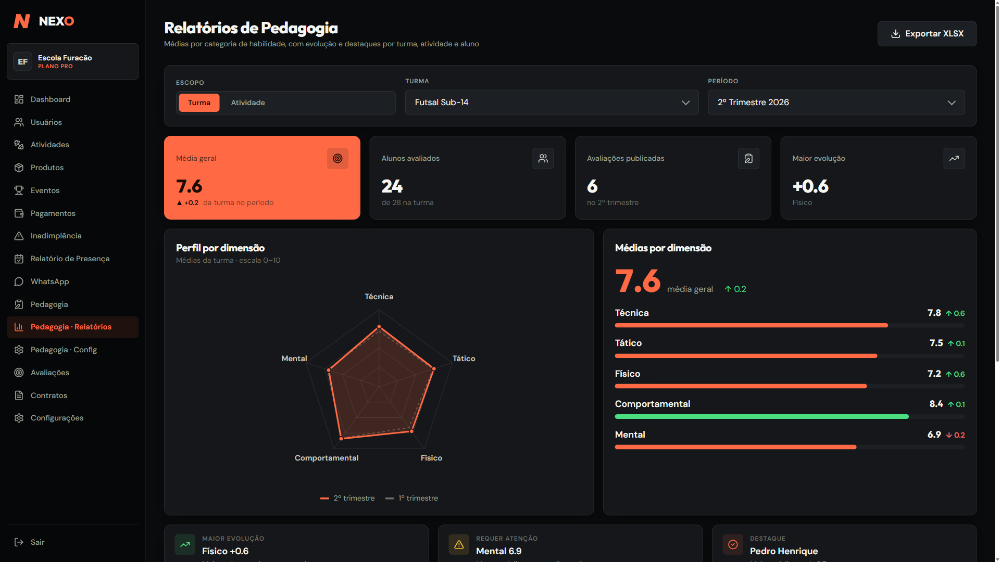

SaaS para escolas esportivas
Nexo
Plataforma para escolas esportivas controlarem alunos, mensalidades, cobranças e inadimplência, com avisos pelo WhatsApp.
Problema
Pagamentos avulsos, PIX, assinaturas e mensalidades se misturavam, e a escola não tinha certeza de quem estava em dia.
Solução
Sistema para várias escolas, com dados isolados por organização, Mercado Pago integrado (PIX e recorrência), webhooks idempotentes e conciliação financeira.
Resultado
250+ alunos e R$70k+ em cobranças acompanhados, com menos alertas falsos de inadimplência.